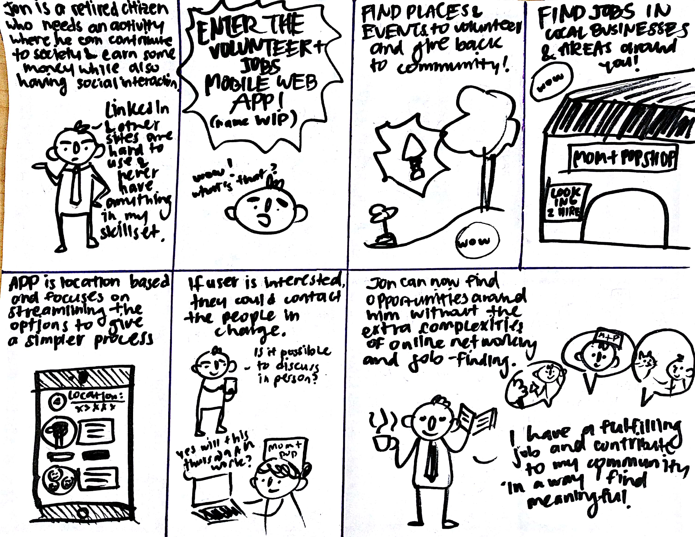

Problem Statement
Due to difficulty with keeping up with the advancement in technology over the years, people near their senior years find the job-hunting process more daunting and discouraging than their younger counterparts.
Our Solution
Our team decided to create a web application that simplifies the process of finding (and applying for) local volunteer and job opportunities.
My Role
Over three months, I worked on the team as a UI/UX Designer to help create the flow and simple feel of the webapp as well as design a smooth process for users.
Tools: Bootstrap
Skills: needfinding, storyboarding, prototyping, user testing, HTML, CSS, JavaScript
Teammates: Andy Lin, Vanessa Tse
Background
Over three months, my group and I created a web application that would aid anybody over the age of 40. Due to a lack of contact with the specific demographic, there was much to be done in little time. The IDEO design process was our main guiding point in this project. Of course, we could not rely solely on a guideline and much of our work was grounded in our needfinding.
The Work
Needfinding:
My team went through an interview process of asking people ages 40+ in different environments of their daily lives and struggles. Many had plenty of time and have tried to fill the void with some fulfilling work but find difficult to do so.
We found a few key related points they all talked about
Older people had trouble finding work to do using traditional methods like newspaper postings and walk-ins.
Online platforms such as job sites had irrelevant positions that fit the people’s skillsets.
Recreational activities were hard to scout for as they are usually spread by mouth.

We created a storyboard that would reflect how our app accomplishes a user’s needs
Wireframing:
We thus set out to prototype some screens for a potential platform to help simplify the process of finding opportunities. We wanted to focus on simplicity and creating a process that has a lower learning curve so people of all background could comfortably navigate.
User Testing
We asked several people on thoughts of our web app as part of our heuristic evaluation. Some of the main pain points were
- The contrast of some pages made it hard to read and navigate around.
- Users had some difficulty navigating through the site on mobile as the UI was not completely mobile friendly.
Conclusion and Thoughts
Given more time, we would have liked to continue user testing to gain more feedback on our product. As this was my first group project relating to frontend design, I realized that it can be very easy to overlook some details that can really help the user interface. I appreciate the value of user testing as it helped us focus on what is important based on user input rather than our personal thoughts.
Thanks for reading. 👴


{kind=link}
{kind=link}
{kind=link}
{kind=link}
{kind=link}
{kind=link}
{kind=link}
{kind=link}
{kind=link}
{kind=link}
{kind=link}